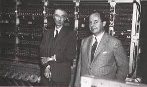
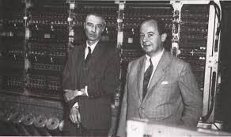
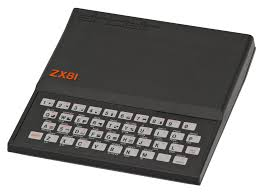
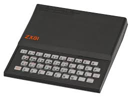

-Konrad Zuse développa entre 1936 et 1938 le Z1, un premier calculateur mécanique utilisant un moteur électrique qui ne fonctionna jamais correctement. Il achève le Z1 en 1938, un ordinateur mécanique utilisant le système binaire
-Un tube électronique (thermionic valve en anglais ou vacuum tube aux États-Unis), également appelé tube à vide ou même lampe, est un composant électronique actif, généralement utilisé comme amplificateur de signal. Les premiers ordinateurs à tubes à vide sont construits à l'Université de la Pennsylvanie. L'ENIAC (Electrical Numerical Integrator and Calculator) comprend 18 000 tubes à vide et occupe 1 800 pieds carrés. C'est le premier « véritable ordinateur »
-Colossus est une série de calculateurs électroniques fondés sur le système binaire. Le premier, Colossus Mark 1, est construit en l’espace de onze mois et opérationnel en décembre 1943, par une équipe dirigée par Thomas “Tommy” Flowers et installé près de Londres, à Bletchley Park : constitué de 1 500, puis 2 400 tubes à vide, il accomplissait 5 000 opérations par seconde.

-Les machines à programme enregistré, introduites par John von Neumann en 1945, permettent de stocker les instructions et données dans la même mémoire, facilitant ainsi la programmation et la reprogrammation des ordinateurs modernes.
-Le transistor est un composant électronique à semi-conducteur permettant de contrôler ou d'amplifier des tensions et des courants électriques. C'est le composant actif le plus important des circuits électroniques aussi bien en basse qu'en haute tension. Le transistor est considéré comme un énorme progrès face au tube électronique : beaucoup plus petit, plus léger et plus robuste, fonctionnant avec des tensions faibles, autorisant une alimentation par piles, il fonctionne presque instantanément une fois mis sous tension, contrairement aux tubes électroniques qui demandaient une dizaine de secondes de chauffage.


-Le circuit intégré (CI), aussi appelé puce électronique, est un composant électronique, basé sur un semi-conducteur, reproduisant une ou plusieurs fonctions électroniques plus ou moins complexes, intégrant souvent plusieurs types de composants électroniques de base dans un volume réduit. En 1958, l’Américain Jack Kilby invente le premier circuit intégré, jetant ainsi les bases du matériel
 

-L’architecture de von Neumann est un modèle pour un ordinateur qui utilise une structure de stockage unique pour conserver à la fois les instructions et les données demandées ou produites par le calcul. Cette architecture est appelée ainsi en référence au mathématicien John von Neumann, qui a élaboré en juin 1945 dans le cadre du projet EDVAC la première description d’un ordinateur dont le programme est stocké dans sa mémoire.

 


| Microprocesseur | Ordinateur Familiaux | ZX 81 | Le Commodore 64 | |
| Evolution Caractéristique | L’élément fondamental des ordinateurs modernes. Unité Centrale de Traitement (CPU) exécute les instructions | Catégorie plus large englobant divers systèmes informatiques domestiques. Conçu pour un usage domestique : jeux, éducation, tâches basiques | Ordinateur domestique précoce et très abordable. Conception minimaliste, clavier à membrane, fonctionnalités limitées | Ordinateur domestique 8 bits populaire et influent. Capacités graphiques et sonores plus avancées |
| Vitesse de travail | Mesurée en fréquence d’horloge (initialement très faible en MHz) | Varie considérablement selon le modèle spécifique | Relativement lent (environ 3,25 MHz) | Environ 1MHz |
| Capacité de calcul | Opération arithmétiques et logiques de base | Capable d’une plus large gamme de calculs selon le modèle | Limitée, principalement arithmétique entière | Plus capable avec des opérations en virgule flottante possible |
| Capacité mémoire | Très petits registres internes, la mémoire externe varie | Varie considérablement selon le modèle spécifique | Typiquement 1 Ko de RAM (extensible) | Typiquement 64 Ko de RAM |
- Dans les années 1950, les trois premiers langages de programmation modernes ont été conçus :
• FORTRAN, le traducteur de formules (FORmula TRANslator), inventé par John Backus et al.
• LISP, spécialisé dans le traitement des listes (LISt Processor), inventé par John McCarthy et al.
• COBOL, spécialisé dans la programmation d'application de gestion (COmmon Business Oriented Language), créé par le Short Range Committee dans lequel on retrouve entre autres Grace Hopper
- publication à Zurich par une commission d'informaticiens européens et américains d'un nouveau langage permettant de décrire les problèmes de manière algorithmique : ALGOL (ALGorithmic Oriented Language). Le rapport, publié pour la première fois en 1958 fait la synthèse des principales idées circulant à l'époque, et propose deux innovations majeures :
• Structure en blocs imbriqués : le programme peut être structuré en morceaux de codes logiques sans avoir besoin de donner un nom explicite à ce bloc de code ; on pourrait rapprocher cette notion du paragraphe dans le monde littéraire.
• Notion de portée : un bloc peut manipuler des variables qui lui sont propres ; aucun code en dehors de ce bloc ne peut y accéder, et encore moins les manipuler. la syntaxe du langage a été décrite de manière mathématique, en utilisant le métalangage BNF. Presque tous les langages à venir utiliseront une variante de cette notation BNF pour décrire leur syntaxe
- Algol 60 eut une influence particulière sur la conception de langages ultérieurs. Certains d'entre eux sont rapidement devenus populaires. Par exemple les systèmes industriels de Burroughs sont conçus pour être programmés via un sous-ensemble d'Algol étendu. Les idées essentielles d'Algol se retrouvent finalement dans Algol 68 :
• La syntaxe et la sémantique deviennent encore plus orthogonales, avec des procédures anonymes, un système de types récursifs, des fonctions d'ordre supérieur.
• Toute la syntaxe et la sémantique du langage sont décrites formellement, et plus seulement la partie non contextuelle de la syntaxe. Un formalisme conçu spécialement dans ce but a été créé : la grammaire de van Wijngaarden. Certaines fonctionnalités peu utilisées d' Algol 68 (comme la concurrence et les blocs parallèles) ainsi que ses systèmes complexes de raccourcis syntaxiques, et de transtypage automatique, l'ont rendu impopulaire auprès des programmeurs chargés de l'utiliser ; aussi est-il réputé difficile d'accès. Un certain Niklaus Wirth abandonne alors la commission de conception d'Algol, et à partir de ses travaux sur Algol-W (pour Wirth) créera un langage plus simple, le Pascal.
- La période courant de la fin des années 1960 au début des années 1970 a vu un véritable foisonnement des langages de programmation. La plupart des paradigmes des principaux langages sont inventés durant cette période :
• Simula 67, inventé par Nygaard et Dahl comme surcouche d'Algol 60, est le premier langage conçu pour pouvoir intégrer la programmation orientée objet et la simulation par événements discrets.
• C, un des premiers langages de programmation système, est développé par Dennis Ritchie et Ken Thompson pour le développement d'Unix aux laboratoires Bell entre 1969 et 1973.
• Smalltalk (milieu des années 1970) est l'un des premiers langages de programmation à disposer d'un environnement de développement intégré complètement graphique.
• Prolog (PROgrammation LOGique), défini en 1972 par Colmerauer, Roussel et Kowalski (en) est le premier langage de programmation logique.
• ML (Meta Language) inventé par Robin Milner en 1973, construit sur un typage statique fort et polymorphe au-dessus de Lisp, pionnier du langage de programmation généraliste fonctionnel.
- Certains autres langages importants ont été développés au cours de cette période dont :
• 1970 - Pascal, héritier d'Algol plus convivial
• 1970 - Forth
• 1971 - LSE (Langage Symbolique d'Enseignement), pour l'expérimentation de l'informatique sur l'opération dite « Expérience des 58 lycées »
• 1978 - SQL (Structured Query Language), au départ seulement un langage de requêtes, puis étendu par la suite à la construction de programme procédural de type SQL/PSM, PL/SQL…
- Les années 1980 furent des années d'une relative consolidation. Au Japon et ailleurs, des sommes énormes ont été dépensées pour étudier ce qu'on appelle les langages de « cinquième génération » des langages qui intègrent la logique dans la construction des programmes.
- Certains langages importants ont été développés au cours de cette période :
• 1983 - Ada
• 1983 - C++
• 1985 - Eiffel
• 1987 - Perl
• 1989 - FP (Backus)
- Les années 1990 voient peu de nouveautés fondamentales apparaître. Au contraire, beaucoup d'idées anciennes sont combinées et portées à maturité, pour augmenter la productivité des programmeurs et la fiabilité des programmes Quelques langages importants ont été développés au cours de cette période :
• 1990 - Haskell
• 1991 - Python
• 1993 - Lua
• 1994 - ANSI Common Lisp
• 1995 - Java
• 1995 - PHP
• 1995 - Ruby
• 1996 - JavaScript
• 1996 - OCaml
• 2001 - C#
- Les années 2010 et 2020 : 3 axes -sûreté-fonctionnel-performances- La liste des langages développées pendant les années 2010 et 2020 est très longue : ne seront listés que les principaux et les plus emblématiques. Cette explosion de langages peut être présentée sur 3 axes : sûreté, langages fonctionnels, performances.
- Sûreté- Les années 2010 tendent vers des langages plus sûrs. Il y a plus de vérification lors de compilation pour éviter les erreurs pendant que le programme tourne. Les valeurs « null » se retrouvent supprimées pour être remplacées par des structures plus sécurisées, obligeant le développeur à rendre son code plus sûr.
• 2010 - Rust
• 2011 - Ceylon
• 2012 - Elm
- Langages fonctionnels - Initié dans les années 2000 y compris à partir de méta-langage, des variantes de divers langages intégrent des spécifications permettant un développement fonctionnel.
• 2007 Clojure (à partir de Lisp)
• 2004,2006 mais vraiment développé à partir de 2011 Scala (à partir de Java)
• 2010 F# proposé par Microsoft (à partir de C#)
- Performances et web - Ces évolutions visent à développer des nombreux langages pour remplacer ceux des années 90 et 2000 en développant la performance, le portabilité et/ou la facilité. Les orientations sont variées :
• Go - programmation système depuis 2009-2010 par Google
• Dart - pour le multi-plateforme depuis 2011 ou Kotlin (fonctionnel également) en particulier pour les mobiles Android depuis 2017
• Swift - pour les systèmes Apple (dont les mobiles) depuis 2014
• TypeScript - avec pour ambition de remplacer Javascript
• Carbon proposé en 2022 avec pour ambition de remplacer C++ (mais Rust peut également tenir ce rôle de remplaçant de C++).